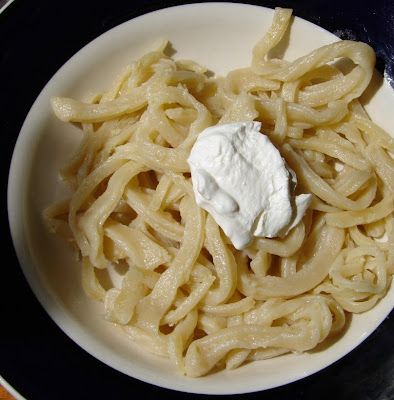

Lapsha with sour cream

Ingredients
- 1⁄2 cup boiling water
- 1⁄2 cup melted butter
- 1 1⁄2 teaspoons salt
- 6 large eggs
- 5 cups all-purpose flour
Instructions
- To a large saucepan, add water and bring to boil.
Add butter to boiled water and let dissolve, whisk well to blend; let cool to warm.
In a large mixing bowl, add salt, eggs and beat well.
Gradually add water/butter mixture to eggs and whisk well to blend.
- Add flour to egg mixture, 1/2 cup at a time, mixing well after each addition.
Place dough on a lightly floured surface and knead for about 10 minutes.
Cut dough into pieces to form dough balls the size of a medium orange.
Cover dough balls with a damp cloth while rolling out dough.
- Using a wooden rolling pin, roll each dough ball until paper thin or as thin as possible.
Preheat oven to 300°F.
Place dough circles on a large round pizza cooking sheet.
Dry each dough circle in the preheated oven until dry to the touch, about 20 minutes, BUT DO NOT BROWN.
Fold each dried dough circles individually into a fold that is about 1 1/2 inches wide.
- Cover folded dough with a cloth until all circles are dried and folded.
On a cutting board, using a very sharp knife, cut off very thin slices, cutting on a slight angle and
cutting across the 1 1/2 inch fold.
- Spread cut strands on cookie sheets and dry in a preheated 350 F oven for about 20 minutes, or until nice
and crisp,stirring the strands at least twice during the drying process.
Cool completely and store in noodles in glass jars with a tight fitting lid.
Use in soups or make a Lapshevnik.